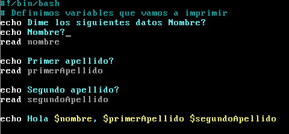

Una variable es una posición de memoria donde podemos almacenar información.
En los scripts de shell Bash una variable se define mediante un nombre. Los nombres de variables no puede contener espacios, por lo que si consiste en varias palabras se usa el estilo de escritura Camel Case. Según este estilo en un nombre compuesto la primera de cada palabra se escribe en mayúsculas, excepto la primera palabra.
Para asignar un valor a una variable se usa el simbolo =. El valor de la variable puede cambiar tantas veces como se defina en el programa. Para acceder al valor de una variable se usa el símbolo de dolar.
También podemos asignar el valor del resultado de un comando, introduciendo el comando entre estos simbolos $( ).
En el siguiente ejemplo podemos ver todo esto:
Interacción con el usuario
La utilidad de las variables es que varien su valor según las necesidades del usuario. Una de posibilidad para que esto suceda es que le pidamos al usuario que introduzca de forma interactiva los valores de las variables. Esto se consigue con la instrucción read.
Podemos modificar el ejemplo anterior para utilizar esta instrucción:
